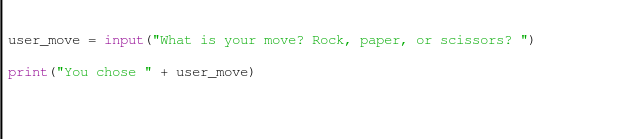
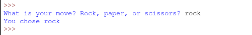
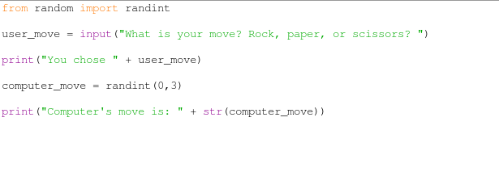
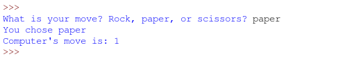
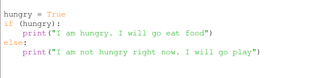
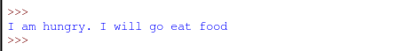
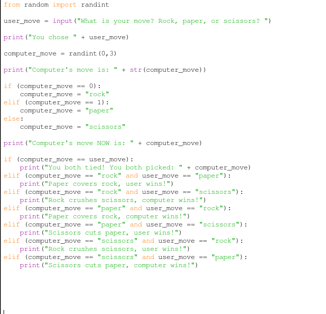
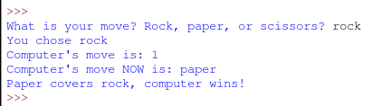

Intro to programming using Python.
Computers are really dumb. You know why? Because they need to be told exactly what to do in order for it to work. Humans sometimes don't need to be told what to do. Do you have to think every time you blink your eyes? No, because our brains are really smart and it allows us to do certain things without us telling it what to do. We can just figure it out but with computers, if they are not told exactly what to do then they just sit there doing nothing. Programming is how you tell a computer what to do. ("Coding" is also another way to say programming.) Today, we are going to learn how to program.
What is Python?
Programming is how you tell a computer what to do. Programming is typing commands into a file and telling your computer to run it. The commands that you type are the commands of a programming language. Python is a programming language that you use to tell a computer what to do.
Python is a very popular programming language. Pinterest, Instagram, Reddit, YouTube, Dropbox, Spotify are all written using Python.
So lets program!...well, after you do this really quick.
In order to program in Python, you need to do the following:
- Download and install Python 3.4.2 to your computer. Click below on the link for whatever computer you have.
- Windows 64 bit
- Windows 32 bit
- Mac OSX 10.6 and later
- Mac OSX 10.5 and later
- Linux (should already be installed on your distro)
- After you are done downloading and installing Python, open up the program called "IDLE" on your computer. After you open it, it should look something like the picture below:
Do you see the '>>>' on the screen? Go ahead and start typing to the right of that. Go ahead and type the text below and then hit the enter key:
Did you see what happened?! Wow! That was your first program! You are already programming!
You are now ready to start programming.
When you learn something new, like programming, it is always a good idea to have a goal in mind that you want to work towards. Maybe it is making an adventure game, or a website or an app. Today, our goal is to create a game. Do you know how to play rock paper scissors? If you do, great! If not, Click here and read about it quick. So to learn how to write Python today we are going to make a game of rock, paper, scissors.
Go up to your menu in IDLE and click "File" and then click on "New file". You should see a new window pop up that is blank. This file is called the "text window" and as you can see, it does not have those '>>>' arrows in it.
Now in your text window, go up to its menu and click "File" and then click "Save As" and then save the file on your computer with the name "rock-paper-scissors.py". We will be writing our Python code in this file and then executing it on our computer.
When writing a program, it is always a good idea to have a plan.
Before writing any code, we should go through all of the steps that we need to do in order to finish this program. Then after we think of all the steps, we can write all of the code in order to satisfy those steps.
Our plan for this game is to:
1. Ask the user to make their move by typing in "rock", "paper", or "scissors" into the computer.
2. Then the computer player will make it's move by choosing either "rock", "paper", or "scissors".
3. Then we will compare the user's move and the computer's move to see who wins the game and display it to the user.
And that is our plan defining step by step all of the tasks that we must complete in this program to complete our game. So now that we wrote out our plan, lets start thinking about the actual Python code needed to write this program.
How to ask user for input.
(using the "input" function)
When the game first starts, we want to ask the user to type in thier move by typing either "rock", "paper", or "scissors" into the computer. So how do you ask the user to type something in? Let me tell you. Go to your text window and type what is shown in the picture below.
After you type what is shown above in your text window, go up to the menu and click "Run" and then click "Run module" (if you are asked to save, click yes.) When asked "What is your move?", go ahead and type in "rock", "paper", or "scissors".
You should see something like this below:
The function "input()" that you typed in your text window is how you ask for input from a user in Python.
The second line of code that we wrote is the "print()" function and that is used to print to the user the value of the variable that we saved their choice into.
Great! Now we know how to save input from the user. On to the next step.
The next step is to have the computer pick its move of "rock", "paper", or "scissors". This next section below shows you how we will have the computer picks its move.
How the computer makes its move.
(using a random number generator)
To make the computer player pick its move of rock, paper or scissors, we will use a random number generator. Lets check it out.
Go back to your text window that we are writing our code into and lets add some more code to it. Look at the picture below and type the code your file is missing to make your code look exactly like the picture's code.
Go ahead and again go to the menu and click "Run" and then click "Run module" (if you are asked to save, click yes.)
You should see something like below.
Now go back to your text window and click the "Run" menu item and "Run module" again to run the code again. Did the computer's move print a different number then last time you ran it?
Run your code a few times. See that the number the computer's move prints is different sometimes? We are using a random number generator so it will print different numbers randomly!
But wait. That makes no sense. Why is the computer's move a number?! The user's move is a word ("rock", "paper" or "scissors"). So how can we compare a word (also known as a "string" in programming) the user types in with a number that the computer entered? That is what we will be doing next!
How to change the computer's number to a word.
(using "if" statements.)
When you are hungry, what do you do? You eat food. If you are not hungry what do you do? You go play instead. This is the idea behind "if" statements. Check out this code below (just look at it. Don't type it into your text window):
This code is an if statement for the example I just gave above about being hungry or not. The variable "hungry" is stating that "true, I am hungry". So because the hungry variable is True which means that you are hungry, if I run this code, this is what happens:
So we are going to use a "if" statement to change our computer's number move into either "rock", "paper", or "scissors".
Go to your text window and type in code from the code shown below to make sure your text window matches:
Go ahead and run this code now (you know how to do this now. Click "Run" and then "Run module" in the menu.). Run it a few times! You should see how the computer's move is now either "rock", "paper", or "scissors"!!
We are almost there! We now need to just see who wins the game and we are done!
Deciding who wins the game
(using "if" statements some more.)
This is easy. To determine who wins, all we are going to do is compare the computer's move to the user's move and print who wins. Guess how we do this. Using "if" statements!
- If the computer and the user choose the same move then the game is a tie.
- If the computer chooses rock and the user chooses paper, then the user wins.
- If the computer chooses rock and the user chooses scissors, then the computer wins.
- If the computer chooses paper and the user chooses rock, then the computer wins.
- If the computer chooses paper and the user chooses scissors, then the user wins.
- If the computer chooses scissors and the user chooses rock, then the user wins.
- If the computer chooses scissors and the user chooses paper, then the computer wins.
So lets take this idea of comparing the user's move and the computer's move to see who wins and turn it into code.
Go to your text window and type in code from the code shown below to make sure your text window matches:
Lets run the finished game!! Go ahead and run it, enter "rock", "paper", or "scissors" and see if you win the game!
You just created your first game and learned some Python programming!

This work is licensed under a Creative Commons Attribution 4.0 International License.